Display conditional effects of predictors for mvgam models
Source:R/conditional_effects.R
conditional_effects.mvgam.RdDisplay conditional effects of one or more numeric and/or categorical
predictors in models of class mvgam and jsdgam, including two-way interaction effects.
Usage
# S3 method for mvgam
conditional_effects(
x,
effects = NULL,
type = "expected",
points = FALSE,
rug = FALSE,
...
)
# S3 method for mvgam_conditional_effects
plot(x, plot = TRUE, ask = FALSE, ...)
# S3 method for mvgam_conditional_effects
print(x, ...)Arguments
- x
Object of class
mvgam,jsdgamormvgam_conditional_effects- effects
An optional character vector naming effects (main effects or interactions) for which to compute conditional plots. Interactions are specified by a
:between variable names. IfNULL(the default), plots are generated for all main effects and two-way interactions estimated in the model. When specifyingeffectsmanually, all two-way interactions (including grouping variables) may be plotted even if not originally modeled.- type
characterspecifying the scale of predictions. When this has the valuelinkthe linear predictor is calculated on the link scale. Ifexpectedis used (the default), predictions reflect the expectation of the response (the mean) but ignore uncertainty in the observation process. Whenresponseis used, the predictions take uncertainty in the observation process into account to return predictions on the outcome scale. Two special cases are also allowed: typelatent_Nwill return the estimated latent abundances from an N-mixture distribution, while typedetectionwill return the estimated detection probability from an N-mixture distribution- points
Logical. Indicates if the original data points should be added, but only iftype == 'response'. Default isTRUE.- rug
Logical. Indicates if displays tick marks should be plotted on the axes to mark the distribution of raw data, but only iftype == 'response'. Default isTRUE.- ...
other arguments to pass to
plot_predictions- plot
Logical; indicates if plots should be plotted directly in the active graphic device. Defaults to
TRUE.- ask
Logical. Indicates if the user is prompted before a new page is plotted. Only used if plot isTRUE. Default isFALSE.
Value
conditional_effects returns an object of class
mvgam_conditional_effects which is a
named list with one slot per effect containing a ggplot object,
which can be further customized using the ggplot2 package.
The corresponding plot method will draw these plots in the active graphic device
Details
This function acts as a wrapper to the more
flexible plot_predictions.
When creating conditional_effects for a particular predictor
(or interaction of two predictors), one has to choose the values of all
other predictors to condition on. By default, the mean is used for
continuous variables and the reference category is used for factors. Use
plot_predictions to change these
and create more bespoke conditional effects plots.
Examples
# \donttest{
# Simulate some data
simdat <- sim_mvgam(family = poisson(),
seasonality = 'hierarchical')
# Fit a model
mod <- mvgam(y ~ s(season, by = series, k = 5) + year:series,
family = poisson(),
data = simdat$data_train,
chains = 2)
#> Compiling Stan program using cmdstanr
#>
#> Start sampling
#> Running MCMC with 2 parallel chains...
#>
#> Chain 1 Iteration: 1 / 1000 [ 0%] (Warmup)
#> Chain 2 Iteration: 1 / 1000 [ 0%] (Warmup)
#> Chain 1 Iteration: 100 / 1000 [ 10%] (Warmup)
#> Chain 1 Iteration: 200 / 1000 [ 20%] (Warmup)
#> Chain 2 Iteration: 100 / 1000 [ 10%] (Warmup)
#> Chain 1 Iteration: 300 / 1000 [ 30%] (Warmup)
#> Chain 1 Iteration: 400 / 1000 [ 40%] (Warmup)
#> Chain 1 Iteration: 500 / 1000 [ 50%] (Warmup)
#> Chain 1 Iteration: 501 / 1000 [ 50%] (Sampling)
#> Chain 2 Iteration: 200 / 1000 [ 20%] (Warmup)
#> Chain 2 Iteration: 300 / 1000 [ 30%] (Warmup)
#> Chain 1 Iteration: 600 / 1000 [ 60%] (Sampling)
#> Chain 2 Iteration: 400 / 1000 [ 40%] (Warmup)
#> Chain 2 Iteration: 500 / 1000 [ 50%] (Warmup)
#> Chain 2 Iteration: 501 / 1000 [ 50%] (Sampling)
#> Chain 1 Iteration: 700 / 1000 [ 70%] (Sampling)
#> Chain 2 Iteration: 600 / 1000 [ 60%] (Sampling)
#> Chain 2 Iteration: 700 / 1000 [ 70%] (Sampling)
#> Chain 1 Iteration: 800 / 1000 [ 80%] (Sampling)
#> Chain 1 Iteration: 900 / 1000 [ 90%] (Sampling)
#> Chain 2 Iteration: 800 / 1000 [ 80%] (Sampling)
#> Chain 2 Iteration: 900 / 1000 [ 90%] (Sampling)
#> Chain 1 Iteration: 1000 / 1000 [100%] (Sampling)
#> Chain 2 Iteration: 1000 / 1000 [100%] (Sampling)
#> Chain 1 finished in 0.7 seconds.
#> Chain 2 finished in 0.6 seconds.
#>
#> Both chains finished successfully.
#> Mean chain execution time: 0.7 seconds.
#> Total execution time: 0.8 seconds.
#>
# Plot all main effects on the response scale
conditional_effects(mod)
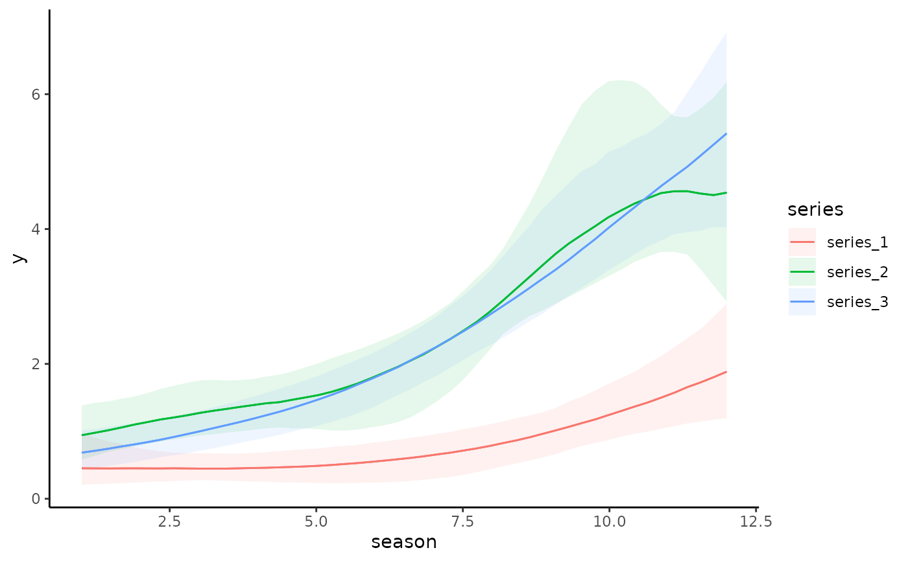
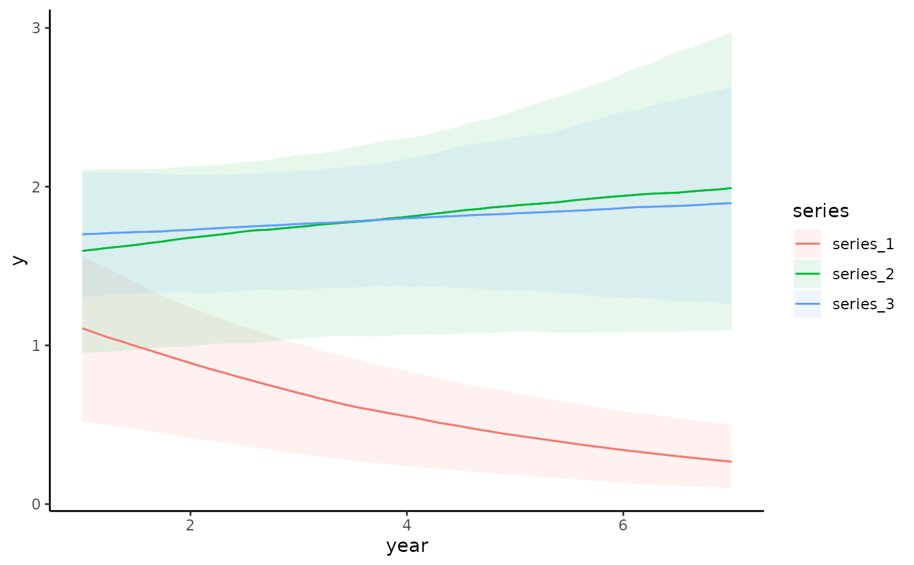
# Change the prediction interval to 70% using plot_predictions() argument
# 'conf_level'
conditional_effects(mod, conf_level = 0.7)
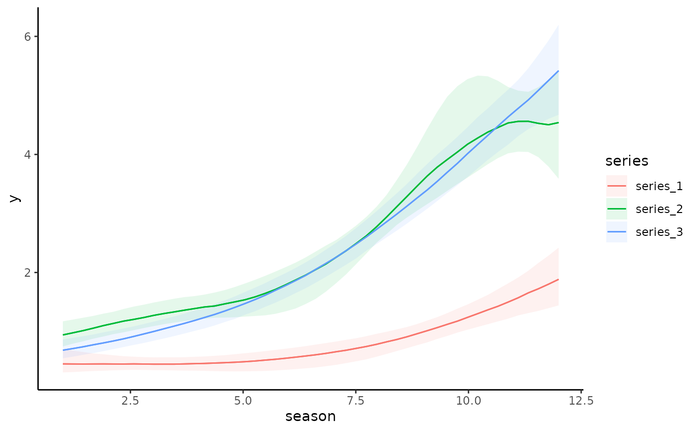
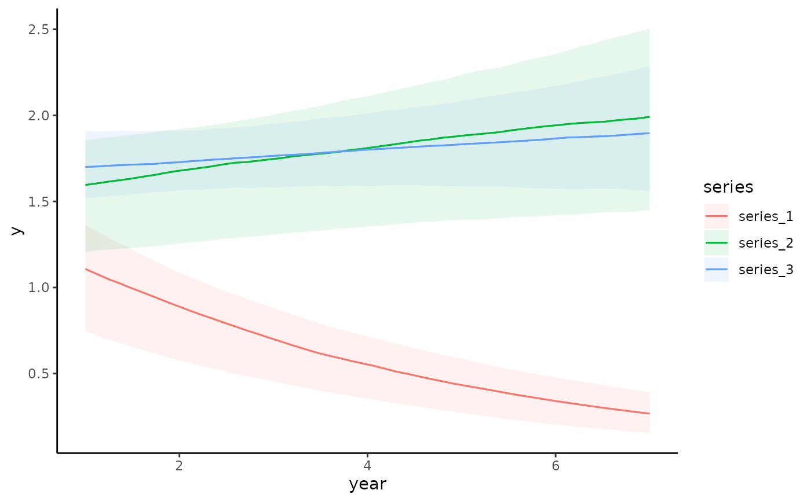
# Plot all main effects on the link scale
conditional_effects(mod, type = 'link')
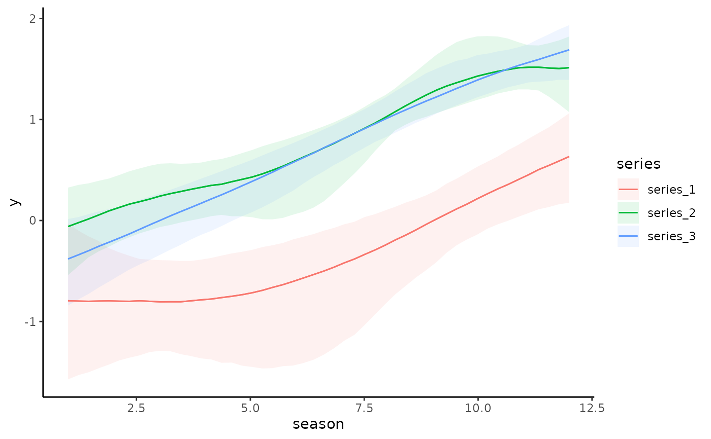
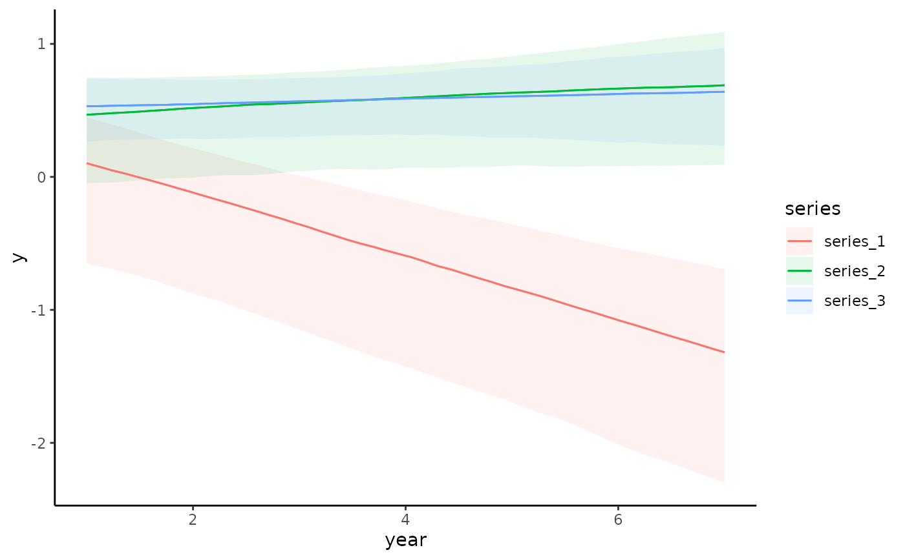
# Works the same for smooth terms, including smooth interactions
set.seed(0)
dat <- mgcv::gamSim(1, n = 200, scale = 2)
#> Gu & Wahba 4 term additive model
mod <- mvgam(y ~ te(x0, x1, k = 5) + s(x2, k = 6) + s(x3, k = 6),
data = dat,
family = gaussian(),
chains = 2)
#> Compiling Stan program using cmdstanr
#>
#> Start sampling
#> Running MCMC with 2 parallel chains...
#>
#> Chain 1 Iteration: 1 / 1000 [ 0%] (Warmup)
#> Chain 2 Iteration: 1 / 1000 [ 0%] (Warmup)
#> Chain 1 Iteration: 100 / 1000 [ 10%] (Warmup)
#> Chain 2 Iteration: 100 / 1000 [ 10%] (Warmup)
#> Chain 1 Iteration: 200 / 1000 [ 20%] (Warmup)
#> Chain 2 Iteration: 200 / 1000 [ 20%] (Warmup)
#> Chain 1 Iteration: 300 / 1000 [ 30%] (Warmup)
#> Chain 1 Iteration: 400 / 1000 [ 40%] (Warmup)
#> Chain 2 Iteration: 300 / 1000 [ 30%] (Warmup)
#> Chain 2 Iteration: 400 / 1000 [ 40%] (Warmup)
#> Chain 1 Iteration: 500 / 1000 [ 50%] (Warmup)
#> Chain 1 Iteration: 501 / 1000 [ 50%] (Sampling)
#> Chain 2 Iteration: 500 / 1000 [ 50%] (Warmup)
#> Chain 1 Iteration: 600 / 1000 [ 60%] (Sampling)
#> Chain 2 Iteration: 501 / 1000 [ 50%] (Sampling)
#> Chain 1 Iteration: 700 / 1000 [ 70%] (Sampling)
#> Chain 2 Iteration: 600 / 1000 [ 60%] (Sampling)
#> Chain 1 Iteration: 800 / 1000 [ 80%] (Sampling)
#> Chain 2 Iteration: 700 / 1000 [ 70%] (Sampling)
#> Chain 1 Iteration: 900 / 1000 [ 90%] (Sampling)
#> Chain 2 Iteration: 800 / 1000 [ 80%] (Sampling)
#> Chain 1 Iteration: 1000 / 1000 [100%] (Sampling)
#> Chain 2 Iteration: 900 / 1000 [ 90%] (Sampling)
#> Chain 1 finished in 3.6 seconds.
#> Chain 2 Iteration: 1000 / 1000 [100%] (Sampling)
#> Chain 2 finished in 3.8 seconds.
#>
#> Both chains finished successfully.
#> Mean chain execution time: 3.7 seconds.
#> Total execution time: 3.9 seconds.
#>
conditional_effects(mod)
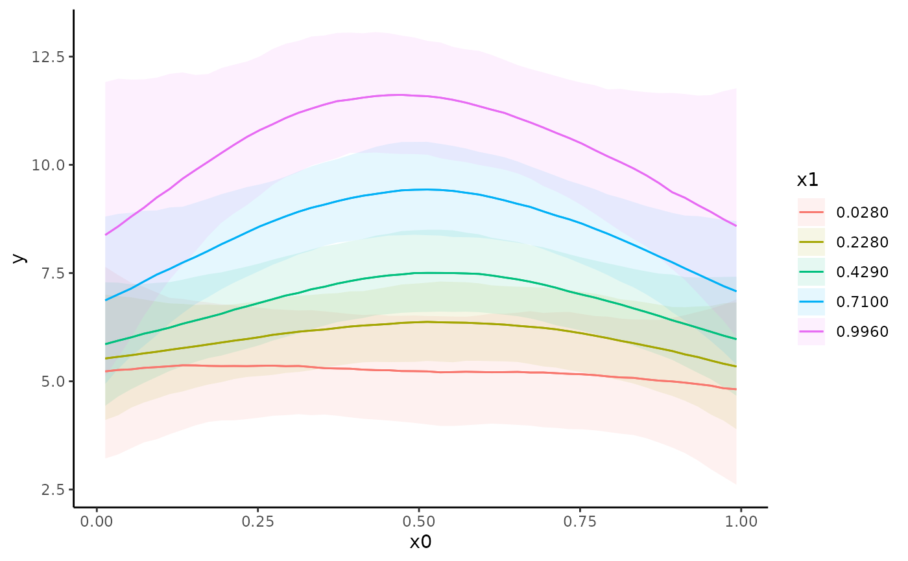
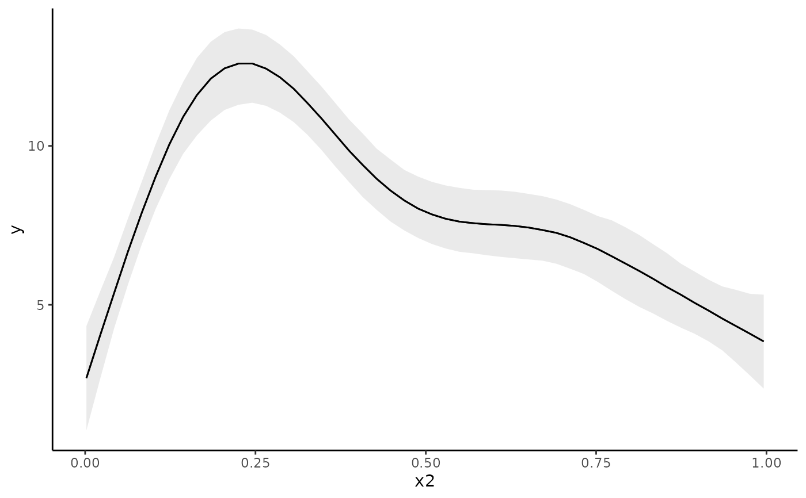
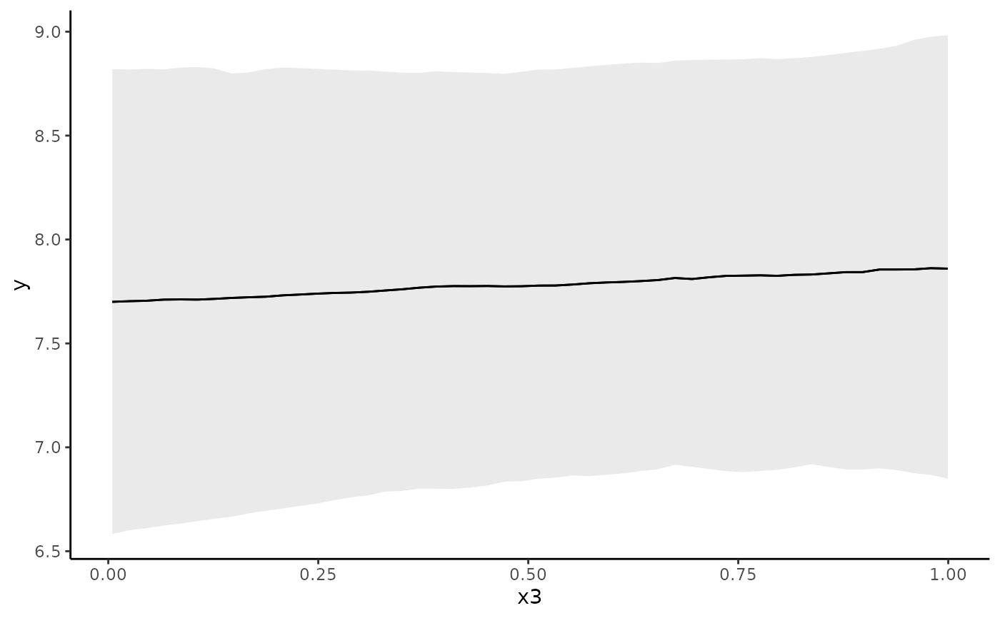
conditional_effects(mod, conf_level = 0.5, type = 'link')
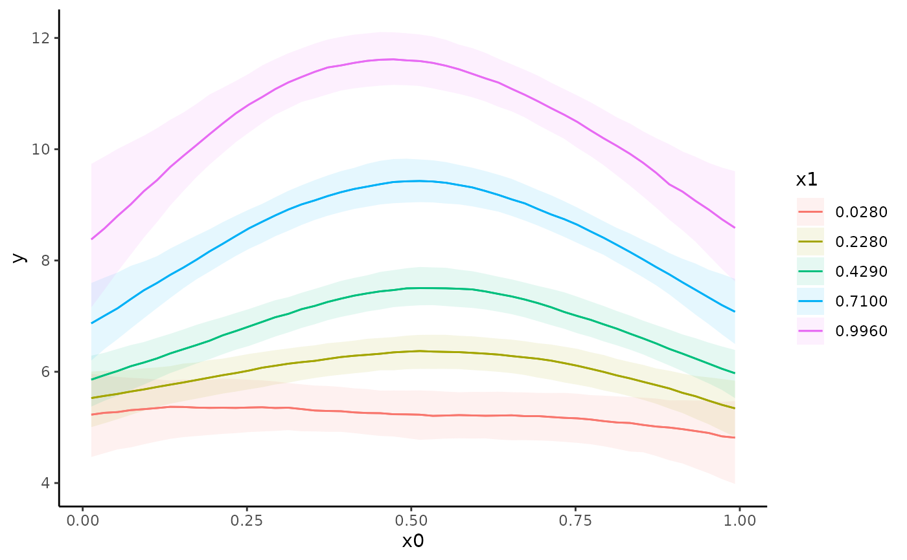
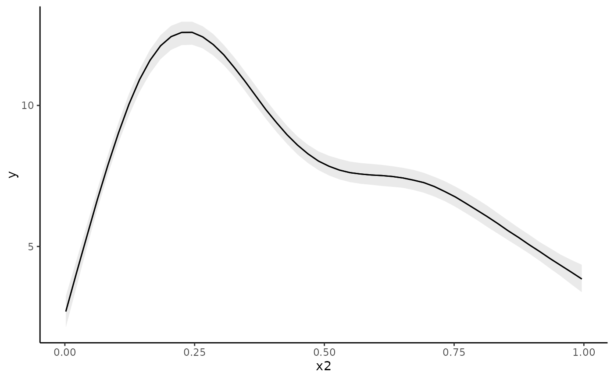
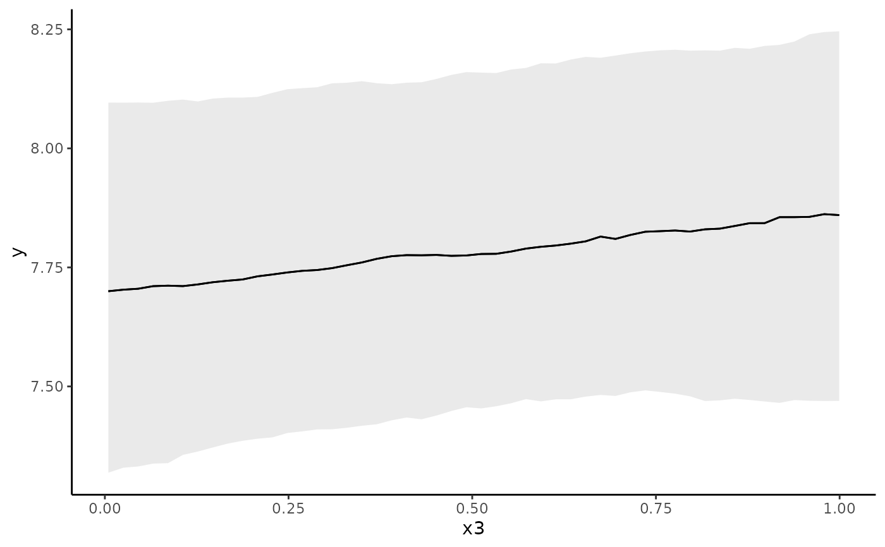
# ggplot objects can be modified and combined with the help of many
# additional packages. Here is an example using the patchwork package
# Simulate some nonlinear data
dat <- mgcv::gamSim(1, n = 200, scale = 2)
#> Gu & Wahba 4 term additive model
mod <- mvgam(y ~ s(x1, bs = 'moi') +
te(x0, x2),
data = dat,
family = gaussian(),
chains = 2,
silent = 2)
# Extract the list of ggplot conditional_effect plots
m <- plot(conditional_effects(mod), plot = FALSE)
# Add custom labels and arrange plots together using patchwork::wrap_plots()
library(patchwork)
library(ggplot2)
wrap_plots(m[[1]] + labs(title = 's(x1, bs = "moi")'),
m[[2]] + labs(title = 'te(x0, x2)'))
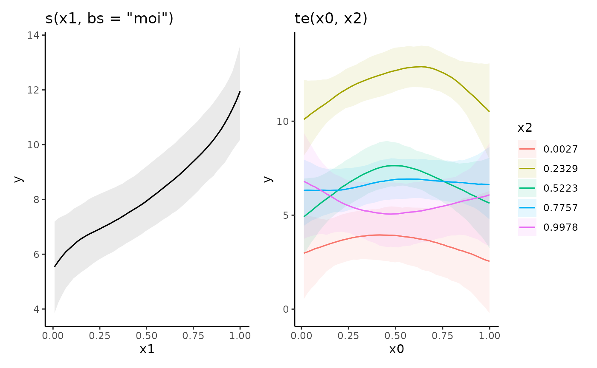
# }